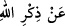

Îman ve ma’rifetler nurlardır. Öyle mü’minler vardır ki nurları bütün yönleri adınlatır.
Öyle mü’minler de vardır ki nurları sadece ayaklarının bulunduğu yeri aydınlatır.
Avâmdan fertlerin îmânının nuru, mum ışığı gibidir. Onlardan bazılarının nurları da bir
kandilin ışığı gibidir. Sıddîkların îmânının nuru ise derece farkına göre ay ve yıldızların
nuru gibidir. Peygamberlere gelince, onların îmânının nuru da güneşin nuru gibi, hattâ
daha da parlaktır. Güneş ışığında genişliğine rağmen bütün ufuklar aydınlanır. Mum
ışığında ise evin sadece dar bir köşesi aydınlanır. İşte aynı şekilde göğüslerin
ma’rifetlerle açılması (inşirâh) ve mü’minlerin kalplerine melekûtun genişliğinin
açılması (inkişâf) farklı farklıdır. Bu sebeple bir hadiste şöyle buyrulmuştur: “Kıyamet
günü şöyle denecektir: “Kalbinde bir miskal, yarım miskal, çeyrek miskal îman
olanları, bir arpa kadar, hattâ zerre (toz) kadar îman bulunanları ateşten
çıkarın!”[94] Bu hadîste de îman derecelerinin farklılığına ve kıyamet gününün
duraklarında (mevâkıf), özellikle de sırattan geçerken nurların, îmânın miktarına göre
ortaya çıkacağına dikkat çekilmektedir.
“Allah’ı anmak hususunda kalpleri katılaşmış olanlara yazıklar olsun!” şiddetli
azab onlar içindir.
“__WORD__ (kasvet)” kalbin katılaşması demektir. Aslı “__WORD__ (katı taş)”tan gelmektedir.
“__WORD__ ise bu katılığın tedâvi edilmesidir.
“__WORD__taki “__WORD__” harfi, “__WORD__ hatâları yüzünden boğuldular.” (Nûh,
71/25) âyetinde olduğu gibi sebep bildirmek içindir.
Mânâ şöyledir: Allah adı anıldığında göğüslerin açılması ve onunla kalblerin itminan
kazanması gerektiği halde Allah’ın zikri sebebiyle kalbi katılaşanlara... Yâni yanlarında
Allah Teâlâ ve O’nun âyetleri anıldığında, bu sebeple içlerini sıkıntı basan ve
kalblerinin katılığı artanlara yazıklar olsun! Bu âyet, “(inen sûre) onların pisliğini
artırır.” (et-Tevbe, 9/125) âyetine benzemektedir.
“__WORD__ ifâdesi, “__WORD__ diye de okunmuştur. Buna göre mânâsı, kalbleri Allah’ı
anmayı kabul etmeyecek kadar katılaşmış olanlara yazıklar olsun, demektir.
Mâlik b. Dînâr (r.h.)’ın şöyle dediği nakledilir: “Hiçbir kula, kalbinin katılaşması
kadar büyük bir cezâ verilmemiştir. Allah bir topluma kızdı mı rahmeti onlardan çekip
alır.”
Allah Teâlâ bir münâcâtında Mûsâ (a.s.)’a şöyle buyurdu: “Ey Mûsâ, dünya hakkında
emelini uzun eyleme; tûl-i emel sâhibi olma! Aksi takdirde kalbin katılaşır. Katı kalb ise
Ben’den uzaktır. Giysisi eski, ama kalbi yeni ol. Böylece yeryüzündekilerin gözünde
küçülür, gökyüzündekiler nezdinde ise tanınırsın.”
Bir hadiste şöyle buyrulmuştur: “Kalbdeki katılığı ortaya çıkaran üç haslet vardır:
Yeme, uyku ve rahata düşkünlük.”[95]
Keşfü’l-esrâr’da şöyle der: “Bil ki dilin bu kasveti, mâsiyetin fazlalığından ortaya
çıkar. Hz. Aişe-i Sıddîka (r.anha) şöyle der: “Hz. Peygamber’den sonra halk arasında